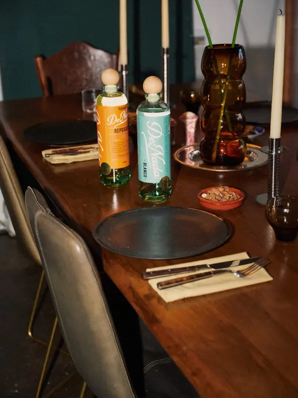

How to host with tequila.
How much to buy, how to batch drinks for a crowd, and how to run a tasting at home. Written by the people who named a tequila “you’re welcome.”
Last updated November 7, 2026

How much tequila do I need?
Two drinks per guest the first hour, one an hour after that. Adjust for how much of the night is tequila.Batch cocktails for a crowd
Mix it before the doorbell rings, so you’re with your guests instead of behind the bar.Method: stir everything in a pitcher, cover and chill. Just before guests arrive, stir in the water (it replaces the melt you would get from shaking). Pour over fresh ice. Fresh citrus tastes best the day it is squeezed.
Host a tequila tasting at home
Three glasses, twenty minutes, and the best conversation of the night.- Pour a flightAbout 1 oz each of a blanco, a reposado and an añejo. Our three come from the same estate and the same barrels, so the only thing that changes is time in oak.
- Use small glassesTulip, copita or white wine glasses gather the aroma. Skip the shot glass; this is for sipping.
- Go young to oldBlanco first (agave, vanilla, lime), then Reposado (caramel and oak), then Añejo (chocolate and baking spice). Room temperature, no ice.
- Water between poursStill water and something plain like tortilla chips or bread reset the palate. Orange slices and cinnamon are a nice touch.
- Ask one question“Which would you serve your best friend?” gets everyone talking more than tasting notes do.
- Finish with a drinkShake a round of margaritas with the Blanco, or stir an Añejo Old Fashioned for the end of the night.
The host checklist
What we set out before anyone arrives.- Ice: 1 to 2 lb per guest, more if bottles are chilling in a tub.
- Citrus: about one lime per margarita, squeezed the day of.
- Agave nectar: half an ounce per Tommy’s; one bottle covers a big party.
- Glassware: rocks glasses for margaritas, tall glasses for palomas, something small for sipping.
- Water: a pitcher on every surface where there’s a drink.
- Food: something salty and something substantial. Tequila loves both.
- A non-alcoholic option: grapefruit, lime and soda is a good paloma without the tequila.
- Rides home: know how everyone is getting there and back.
Hosting questions
How many drinks are in a bottle of tequila?
A 700 mL bottle holds about 23.7 oz: eleven cocktails at 2 oz each, or about twenty-three 1 oz pours for sipping. A 1 L bottle holds about 33.8 oz: sixteen 2 oz cocktails.
How much tequila do I need for a party?
Plan on two drinks per guest in the first hour and one per hour after that, then adjust for how many people will be drinking tequila. For 20 guests over three hours with tequila as the main drink, that is about 80 cocktails, or seven 700 mL bottles. The calculator on this page does the math.
Which tequila is best for a big batch of margaritas?
A good blanco. It keeps the agave flavor bright under lime. Our house margarita is a Tommy’s: 2 parts De Nada Blanco, 1 part fresh lime juice and ½ part agave nectar.
Can I make margaritas ahead of time?
Yes, a few hours ahead. Mix tequila, lime and agave in a pitcher and keep it in the fridge; fresh lime juice tastes best the day it is squeezed. Stir with ice or add ¾ oz of cold water per drink just before serving, so it is diluted the way a shaken drink would be.
How much ice do I need for a party?
About 1 to 2 pounds per guest: more if you are chilling bottles in tubs or it is warm out.
How do I host a tequila tasting at home?
Pour about 1 oz each of a blanco, a reposado and an añejo, in that order, into small tulip or wine glasses. Taste each at room temperature with water on the side, notice how the oak adds vanilla, caramel and then chocolate and spice, and save cocktails for after.